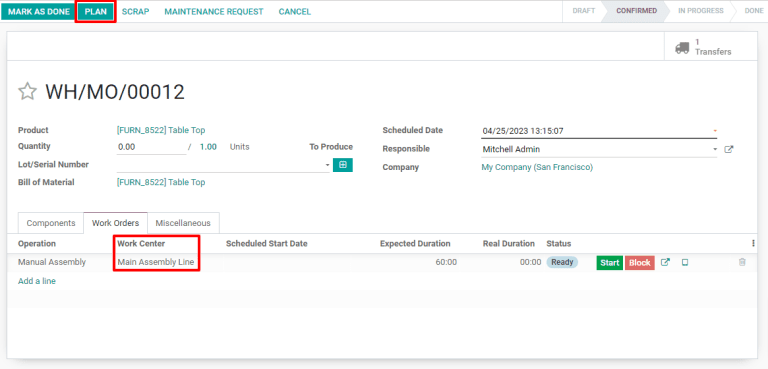

Configuración¶
Antes de que pueda desactivar un centro de trabajo, la plataforma de Odoo debe estar configurada adecuadamente. Primero, debe activar el modo desarrollador. Esto permitirá que aparezca el botón inteligente de Tiempo personal en la ventana emergente de Horas laborables en cada centro de trabajo.
Active el modo desarrollador en , baje hasta el final de la página y haga clic en Activar modo desarrollador que está en la sección Herramientas de desarrollador.

Luego, instale la aplicación Tiempo personal. Esta es la aplicación que se usa para asignar una pausa o tiempo libre a todos los recursos dentro de Odoo, incluyendo empleados y centros de trabajo. Vaya a y escriba Tiempo personal en la barra de Buscar… La tarjeta para el módulo de Tiempo personal es la única que debe aparecer en la página. Haga clic en el botón verde de Instalar que aparece en la tarjeta para instalar la aplicación.

El último paso es configurar adecuadamente los centros de trabajo. Para este flujo de trabajo, es necesario contar con al menos dos centros de trabajo: uno que esté desactivado y otro que reciba las órdenes de trabajo que el otro no puede aceptar. Si no tiene un segundo centro de trabajo configurado, Odoo no podrá enviar a otro lado las órdenes de trabajo y se acumularán en la cola de este único centro de trabajo.
Para crear un centro de trabajo, vaya a :menuselection:`Fabricación –> Configuración –> Centros de trabajo –> Crear `.
Asegúrese de que ambos centros de trabajo tengan configurado el mismo equipo en la pestaña Equipo. Esto garantizará que las operaciones que se llevan a cabo en un centro de trabajo también puedan realizarse en el otro.

Para el centro de trabajo que estará desactivado, seleccione el segundo centro de trabajo en el menú desplegable Centros de trabajo alternos. Ahora, Odoo sabrá que debe enviar órdenes de trabajo al segundo centro cuando el primero no esté disponible por cualquier motivo.

Utilizar la función tiempo personal en un centro de trabajo¶
Con la configuración completa, ahora puede asignar un tiempo de pausa al centro de trabajo que estará desactivado. Comience por ir a y seleccione el centro de trabajo afectado. Haga clic en Editar y luego en el botón de ↗ (enlace externo) que está junto al menú desplegable Horas laborables.

Aparecerá una ventana emergente llamada Abierto: Horas laborables. El estándar de horas laborables para el centro de trabajo aparece aquí junto con otros detalles más. Ya que tiene activado el modo desarrollador habrá un botón de Tiempo personal en la parte superior derecha de la ventana emergente. Haga clic sobre él para ir a la página de Recurso de tiempo personal.

En esta página, haga clic en Crear para configurar una nueva entrada para tiempo personal. En el formulario, anote el Motivo por el cual no está disponible el centro de trabajo (dañado, en mantenimiento, etc), seleccione el centro de trabajo afectado como el Recurso y elija una Fecha de inicio y una Fecha de finalización para especificar el periodo durante el cual el centro de trabajo estará inactivo. Haga clic en Guardar y el tiempo en pausa para el centro de trabajo se guardará en Odoo.
Envie órdenes a un centro de trabajo alterno¶
Una vez que el centro de trabajo esté configurado dentro del periodo en el que estará en pausa, las órdenes de trabajo que lleguen ahí, podrán reenviarse de manera automática al centro de trabajo alterno usando el botón de Planear.
Comience por crear una nueva orden de fabricación en . En el formulario de la orden de fabricación, especifíque un Producto que utilice el centro de trabajo inactivo para una de sus operaciones. Haga clic en Confirmar para confirmar la orden de trabajo.
En la orden de trabajo confirmada, seleccione la pestaña de Órdenes de trabajo. De manera predeterminada, el centro de trabajo que no está disponible estará especificado en la columna de Centro de trabajo. También hay un botón verde en la esquina superior izquierda de la página que dice Planear.
Haga clic en el botón Planear y el centro de trabajo que aparece en la pestaña Órdenes de trabajo cambia automáticamente al centro de trabajo alternativo.

Una vez que el periodo de inactividad del centro de trabajo termine, Odoo reconocerá que el centro de trabajo se encuentra disponible de nuevo. En este punto, hacer clic en el botón de Planear ya no reenviará las órdenes de trabajo al centro de trabajo alterno a menos que el primero tenga su capacidad llena.